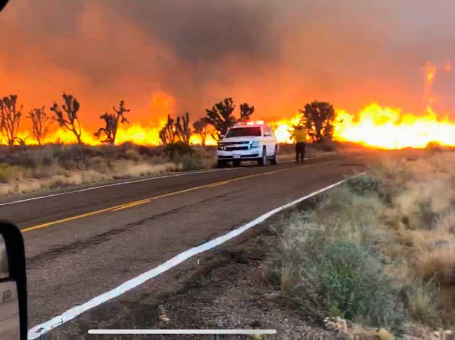

¿Qué son las Temperaturas Extremas?
Tanto las temperaturas muy elevadas que ocasionalmente se dan en verano, como las muy bajas del invierno, suponen un riesgo para la salud y el bienestar de las personas, sobre todo de las más frágiles y vulnerables.
Previsiblemente, las olas de calor serán más intensas, frecuentes y duraderas en las próximas décadas debido al cambio climático. España será uno de los países más afectados por este incremento de las temperaturas veraniegas.
A nivel global, los inviernos muy fríos serán cada vez menos frecuentes; sin embargo, a nivel local, el impacto del frío puede ser todavía importante. Hay estudios que indican que ese podría ser el caso de Madrid.
Por consiguiente, se hace necesario estar preparados y adoptar medidas para proteger la salud, a nivel individual y colectivo, tanto en la época estival como en la invernal.
Por otro lado, el exceso de radiación ultravioleta procedente del sol, puede producir efectos perjudiciales para la salud, como el melanoma de piel. Es especialmente recomendable proteger a niños y jóvenes de esa exposición excesiva.
Altas Temperaturas:
Las Olas de Calor son episodios de temperaturas muy altas que pueden llegar a producir efectos graves sobre la salud de la población, especialmente sobre los sectores más vulnerables como los niños, los ancianos y los enfermos crónicos.

La Consejería de Sanidad dispone de un Plan de Vigilancia y Control de los Efectos de las Olas de Calor diseñado para minimizar sus consecuencias. Es un plan preventivo en el que se informa, tanto a la población general como a los profesionales sanitarios y de los servicios sociales, con la antelación suficiente para que en caso de ola de calor la población pueda adoptar las medidas de protección adecuadas.
El sol es esencial para la vida en la Tierra, también para la salud psíquica y física de las personas.
La vitamina D, imprescindible para un correcto desarrollo de los huesos, se forma en la piel por la acción de la radiación ultravioleta del sol. Por eso, en los países con poco sol es frecuente el raquitismo en los niños a menos que se suplemente la dieta con vitamina D.
Además, se ha observado en diversos estudios que un déficit de vitamina D podría estar asociado a una mayor incidencia de diversos tumores internos (mama, próstata y colon, entre otros).
Sin embargo, el canon estético imperante (piel bronceada como sinónimo de belleza y salud) ha traído como consecuencia una intensificación de la exposición al sol de la población española, al igual que ha sucedido en la mayor parte del mundo desarrollado.
El cáncer de piel es el tumor más frecuente del ser humano y constituye el principal problema de salud derivado de la exposición excesiva a la radiación ultravioleta.
Aunque continúa siendo relativamente infrecuente en España (y en general en el sur de Europa), el melanoma es el tumor que ha presentado una evolución al alza más llamativa en las últimas décadas en nuestro país. Entre la década de los años 70 y la de los años 90 del siglo XX el número de nuevos casos de melanoma se multiplicó por 10.
Las características de la piel de la población del sur de Europa seguramente explica la baja incidencia en estos países en comparación con la de países situados más al norte.
Por otra parte, la utilización cada vez mayor de fuentes artificiales de bronceado es un factor que contribuye a aumentar la preocupación derivada del exceso de exposición a la luz solar.
Es importante que adquiera un conocimiento adecuado de lo que significa la radiación ultravioleta para su salud (Guía de la OMS sobre radiación ultravioleta), así como el tipo de piel que cada persona tiene y las medidas de protección que se deben adoptar para disfrutar de forma segura del sol y prevenir los efectos nocivos del exceso de radiación ultravioleta, en especial del cáncer de piel.
Bajas Temperaturas
Las Olas de Frío son episodios de temperaturas muy bajas que pueden llegar a producir efectos graves sobre la salud de la población, especialmente hipotermia y congelación.
La Consejería de Sanidad dispone de un Plan de Vigilancia y Control de los Efectos del Frío en la Salud, diseñado para minimizar sus consecuencias. Es un plan preventivo en el que se informa, tanto a la población general como a los profesionales sanitarios y de los servicios sociales, con la antelación suficiente para que en caso de ola de frío la población pueda adoptar las medidas de protección adecuadas.